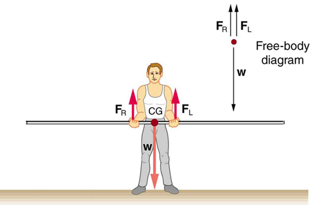
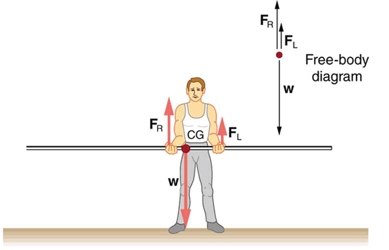
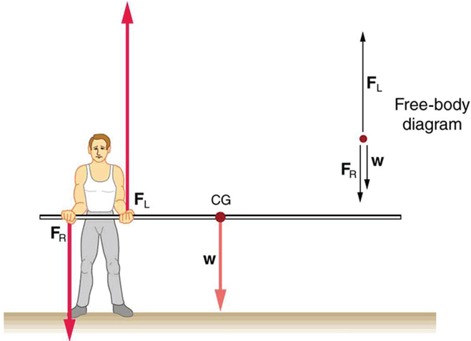

9.4 Applications of Statics, Including Problem-Solving Strategies
Learning Objectives
By the end of this section, you will be able to:
Discuss the applications of Statics in real life.
State and discuss various problem-solving strategies in Statics.
Statics can be applied to a variety of situations, ranging from raising a drawbridge to bad posture and back strain. We begin with a discussion of problem-solving strategies specifically used for statics. Since statics is a special case of Newton’s laws, both the general problem-solving strategies and the special strategies for Newton’s laws, discussed in Problem-Solving Strategies, still apply.
The first step is to determine whether or not the system is in static equilibrium. This condition is always the case when the acceleration of the system is zero and accelerated rotation does not occur.
It is particularly important to draw a free body diagram for the system of interest. Carefully label all forces, and note their relative magnitudes, directions, and points of application whenever these are known.
Solve the problem by applying either or both of the conditions for equilibrium (represented by the equations and , depending on the list of known and unknown factors. If the second condition is involved, choose the pivot point to simplify the solution. Any pivot point can be chosen, but the most useful ones cause torques by unknown forces to be zero. (Torque is zero if the force is applied at the pivot (then ), or along a line through the pivot point (then )). Always choose a convenient coordinate system for projecting forces.
Check the solution to see if it is reasonable by examining the magnitude, direction, and units of the answer. The importance of this last step never diminishes, although in unfamiliar applications, it is usually more difficult to judge reasonableness. These judgments become progressively easier with experience.
Now let us apply this problem-solving strategy for the pole vaulter shown in the three figures below. The pole is uniform and has a mass of 5.00 kg. In the figure, the pole’s cg lies halfway between the vaulter’s hands. It seems reasonable that the force exerted by each hand is equal to half the weight of the pole, or 24.5 N. This obviously satisfies the first condition for equilibrium . The second condition is also satisfied, as we can see by choosing the cg to be the pivot point. The weight exerts no torque about a pivot point located at the cg, since it is applied at that point and its lever arm is zero. The equal forces exerted by the hands are equidistant from the chosen pivot, and so they exert equal and opposite torques. Similar arguments hold for other systems where supporting forces are exerted symmetrically about the cg. For example, the four legs of a uniform table each support one-fourth of its weight.
In the figure, a pole vaulter holding a pole with its cg halfway between his hands is shown. Each hand exerts a force equal to half the weight of the pole, . (b) The pole vaulter moves the pole to his left, and the forces that the hands exert are no longer equal. See the figure. If the pole is held with its cg to the left of the person, then he must push down with his right hand and up with his left. The forces he exerts are larger here because they are in opposite directions and the cg is at a long distance from either hand.
Similar observations can be made using a meter stick held at different locations along its length.

A pole vaulter holds a pole horizontally with both hands.

A pole vaulter is holding a pole horizontally with both hands. The center of gravity is near his right hand.

A pole vaulter is holding a pole horizontally with both hands. The center of gravity is to the left side of the vaulter.
If the pole vaulter holds the pole as shown in the figure, the situation is not as simple. The total force he exerts is still equal to the weight of the pole, but it is not evenly divided between his hands. (If , then the torques about the cg would not be equal since the lever arms are different.) Logically, the right hand should support more weight, since it is closer to the cg. In fact, if the right hand is moved directly under the cg, it will support all the weight. This situation is exactly analogous to two people carrying a load; the one closer to the cg carries more of its weight. Finding the forces and is straightforward, as the next example shows.
If the pole vaulter holds the pole from near the end of the pole (the figure), the direction of the force applied by the right hand of the vaulter reverses its direction.
What Force Is Needed to Support a Weight Held Near Its CG?
For the situation shown in the figure, calculate: (a) , the force exerted by the right hand, and (b) , the force exerted by the left hand. The hands are 0.900 m apart, and the cg of the pole is 0.600 m from the left hand.
Strategy
the figure includes a free body diagram for the pole, the system of interest. There is not enough information to use the first condition for equilibrium ), since two of the three forces are unknown and the hand forces cannot be assumed to be equal in this case. There is enough information to use the second condition for equilibrium if the pivot point is chosen to be at either hand, thereby making the torque from that hand zero. We choose to locate the pivot at the left hand in this part of the problem, to eliminate the torque from the left hand.
Solution for (a)
There are now only two nonzero torques, those from the gravitational force () and from the push or pull of the right hand (). Stating the second condition in terms of clockwise and counterclockwise torques,
or the algebraic sum of the torques is zero.
Here this is
since the weight of the pole creates a counterclockwise torque and the right hand counters with a clockwise torque. Using the definition of torque, , noting that , and substituting known values, we obtain
Thus,
Solution for (b)
The first condition for equilibrium is based on the free body diagram in the figure. This implies that by Newton’s second law:
From this we can conclude:
Solving for , we obtain
Discussion
is seen to be exactly half of , as we might have guessed, since is applied twice as far from the cg as .
If the pole vaulter holds the pole as he might at the start of a run, shown in the figure, the forces change again. Both are considerably greater, and one force reverses direction.
Take-Home Experiment
This is an experiment to perform while standing in a bus or a train. Stand facing sideways. How do you move your body to readjust the distribution of your mass as the bus accelerates and decelerates? Now stand facing forward. How do you move your body to readjust the distribution of your mass as the bus accelerates and decelerates? Why is it easier and safer to stand facing sideways rather than forward? Note: For your safety (and those around you), make sure you are holding onto something while you carry out this activity!
Balancing Act
Play with objects on a teeter totter to learn about balance in this simulation. Test what you've learned by trying the Balance Challenge game.
Test Prep for AP Courses
A child sits on the end of a playground see-saw. Which of the following values is the most appropriate estimate of the torque created by the child?
6 N•m
60 N•m
600 N•m
6000 N•m
A group of students is stacking a set of identical books, each one overhanging the one below it by 1 inch. They would like to estimate how many books they could place on top of each other before the stack tipped. What information below would they need to know to make this calculation?
3 overlapping stacked books.
The mass of each book
The width of each book
The depth of each book
I only
I and II only
I and III only
II only
I, II, and III
(d)
A 10 N board of uniform density is 5 meters long. It is supported on the left by a string bearing a 3 N upward force. In order to prevent the string from breaking, a person must place an upward force of 7 N at a position along the bottom surface of the board. At what distance from its left edge would they need to place this force in order for the board to be in static equilibrium?
m
m
m
m
5 m
A bridge is supported by two piers located 20 meters apart. Both the left and right piers provide an upward force on the bridge, labeled FL and FR respectively.
If a 1000 kg car comes to rest at a point 5 meters from the left pier, how much force will the bridge provide to the left and right piers?
How will FL and FR change as the car drives to the right side of the bridge?
FL = 7350 N, FR = 2450 N
As the car moves to the right side of the bridge, FL will decrease and FR will increase. (At exactly halfway across the bridge, FL and FR will both be 4900 N.)
An object of unknown mass is provided to a student. Without using a scale, design an experimental procedure detailing how the magnitude of this mass could be experimentally found. Your explanation must include the concept of torque and all steps should be provided in an orderly sequence. You may include a labeled diagram of your setup to help in your description. Include enough detail so that another student could carry out your procedure.
Summary
Statics can be applied to a variety of situations, ranging from raising a drawbridge to bad posture and back strain. We have discussed the problem-solving strategies specifically useful for statics. Statics is a special case of Newton’s laws, both the general problem-solving strategies and the special strategies for Newton’s laws, discussed in Problem-Solving Strategies, still apply.
Conceptual Questions
When visiting some countries, you may see a person balancing a load on the head. Explain why the center of mass of the load needs to be directly above the person’s neck vertebrae.
Problems & Exercises
To get up on the roof, a person (mass 70.0 kg) places a 6.00-m aluminum ladder (mass 10.0 kg) against the house on a concrete pad with the base of the ladder 2.00 m from the house. The ladder rests against a plastic rain gutter, which we can assume to be frictionless. Because the gutter is round, the ladder is tangent to it and therefore the normal force by the gutter is perpendicular to the ladder. The center of mass of the ladder is 2.00 m from the bottom, measured parallel to the ladder. The person is standing 3.00 m from the bottom, again measured parallel to the ladder. What are the magnitudes of the forces on the ladder at the top and bottom?
In the figure, the cg of the pole held by the pole vaulter is 2.00 m from the left hand, and the hands are 0.700 m apart. Calculate the force exerted by (a) his right hand and (b) his left hand. (c) If each hand supports half the weight of the pole in the figure, show that the second condition for equilibrium is satisfied for a pivot other than the one located at the center of gravity of the pole. Explicitly show how you follow the steps in the Problem-Solving Strategy for static equilibrium described above.
Key terms
static equilibrium equilibrium in which the acceleration of the system is zero and accelerated rotation does not occur
![Three rectangles with thick blue borders on the bottom, left, and right side and a think black slightly indented line of the right indicate three books. There are two short black vertical lines going down on the left and right of the bottom book with a double-headed black arrow and the label Width below. On the left side of the bottom book are two short horizontal lines with a black vertical double-headed short arrow labeled Depth. The three books are stacked with the second book offset to the right and the third offset even more to the right on the second book. The edge of the second book is marked with a double-headed arrow marked 1” between a vertical line above the left edge of the bottom book and a vertical line above the left edge of the second book.](https://raw.githubusercontent.com/openstax/osbooks-college-physics-bundle/main/media/Figure 09_S3_03.jpg)